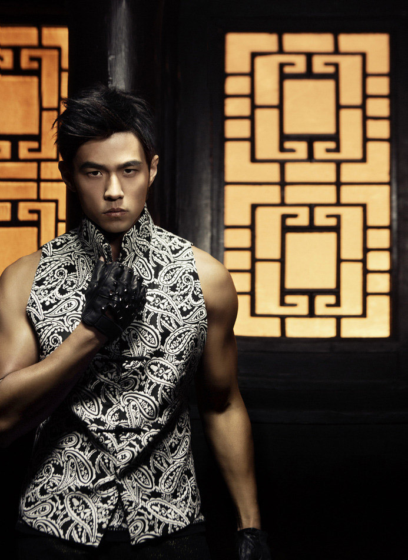
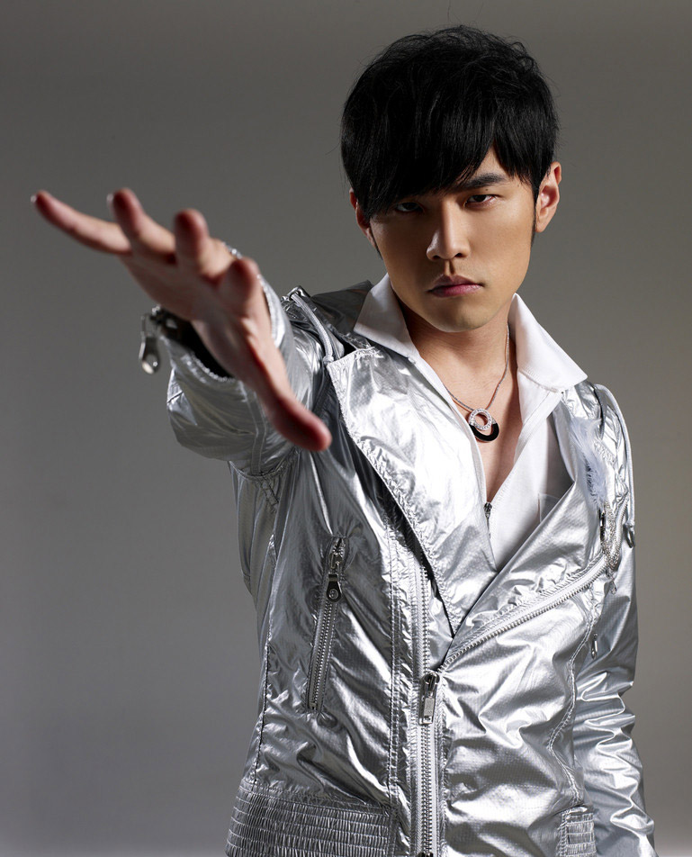

歌手百科
|
周杰伦，1979年1月18日出生于台湾省新北市，中国台湾流行乐男歌手、音乐人、演员、导演、编剧、监制、商人。2000年被吴宗宪发掘并推出首张专辑《Jay》。2005年涉足影视，以电影《头文字D》获第42届台湾电影金马奖及第25届香港电影金像奖“最佳新人”奖。2007年成立JVR有限公司；同年，自编自导自演电影《不能说的秘密》，获得台湾电影金马奖年度台湾杰出电影奖。2008年凭借歌曲《青花瓷》获得第19届金曲奖最佳作曲人奖。2011年凭借专辑《跨时代》再度获得金曲奖最佳国语男歌手奖，并且第4次获得金曲奖最佳国语专辑奖。2014年担任中国禁毒宣传形象大使。2016年在电影《惊天魔盗团2》中扮演小李。2017年1月6日，周杰伦监制爱情电影《一万公里的约定》在中国内地上映。2018年3月31日，参加浙江卫视春季盛典。
歌手图片

|

|

|